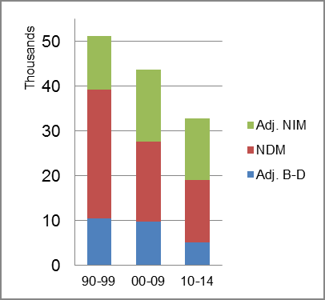

The foreign-born (FB) population increased from 71,314 in 1960 to 375,743 in 2010. That was an increase of 426.9 percent. The foreign-born share increased from 4.0 percent to 9.8 percent.
The share of the overall population that was native-born (NB) increased by 103.6 percent.
Oregon: Population 1960-2010
The first chart below shows the three population change factors for three periods adjusted for annual average amounts. Domestic migration (NDM) was the principal factor in population increase in all periods.
The second chart shows the same data but with an adjustment to reflect births to immigrants shifted to NIM. In it, NDM remained the primary factor in adding population in all periods.
Oregon: Sources of Population Change 1990-2014 Oregon: Sources of Population Change (Adjusted) 1990-2014 
B-D NDM NIM B-D NDM NIM 90-'99 30.0% 56.3% 13.8% 90-'99 20.5% 56.3% 23.2% 00-'09 35.1% 41.0% 23.9% 00-'09 22.1% 41.0% 36.9% 10-'14 38.0% 42.3% 19.7% 10-'14 15.7% 42.3% 41.9%